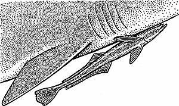

The Recommender Remoras
iTunes is the most popular way for people to play and organize their music. Hundreds of millions of people use iTunes. They use it because it has lots of good tools for organizing music, and works well with the ubiquitous iPod. One thing that iTunes does not do very well is give new music recommendations. The 'Just for you' recommender only uses your iTunes purchases to make recommendations which for most people is just too slim of a dataset to build a recommendation around, and for many, the songs that they purchase through the iTunes store are the songs by artists that only want to try a song or two from, if they really like the artist, they'll go to the local shop and by the whole album.
This combination of ubiquity and poor recommendations has driven a whole industry of music recommenders that work with iTunes - these recommenders run as iTunes plugins, sidebars and tag-alongs. When you start iTunes, these programs also start up - they keep tabs on what you are listening to, and use this data to generate recommendations for you. These recommenders are like remoras (aka suckerfish) to the iTunes shark. By attaching itself to a host such as a shark, a remora benefits by using the host as transport and protection and also feeds on materials dropped by the host. The recommender remoras benefit from iTunes reach onto millions of desktops and feed on the opportunities left by iTunes poor recommender.
The problem for me is that when I start iTunes, a half-dozen recommenders start running too - there's last.fm, iLike, qloud, goombah, musicmobs, and mystrands - all ready to give me a recommendation. I can hear the remora sucking sound (it sounds like a CPU fan going on, trying to cool an overloaded CPU). Some of these recommenders are not so well behaved: MyStrands is using 150 mb of memory, iLike is using a whopping 350 mb of memory - Goombah is using 20% of my CPU. Add to that some questionable UI decisions - iLike attaches its UI to the side of iTunes, QLoud sticks their own button into iTunes itself (last.fm's scrobbler is a notable exception, it just sits quietly and invisibly in the toolbar where you can completely forget about it).
So the question is - is the remora model - the best way
for a recommender to survive? To latch onto the big shark and feed on
the scraps (and hope the shark doesn't take offense)? Or is it better to
find your own niche independent of the big fish - such as the hype
machine and Music IP are doing?
Posted by Japanese Shark on January 26, 2007 at 03:55 PM EST #
Posted by leafar on January 27, 2007 at 12:36 PM EST #
Posted by Zac Johnson on January 29, 2007 at 08:14 AM EST #